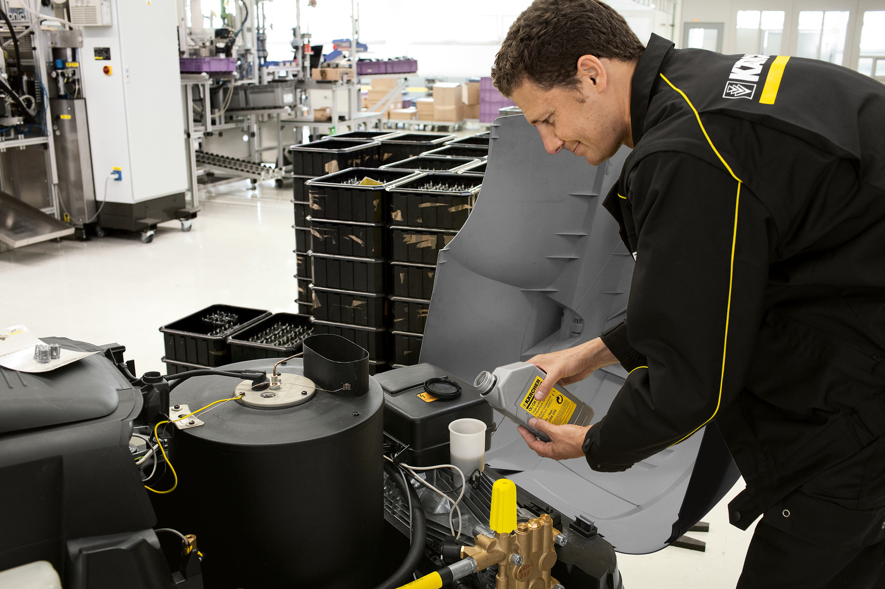

КЕРХЕР ЦЕНТР ВИКТОРИЯ АВТО


| № | Наименование работ | Код | Расценка | Коэффициент |
|---|---|---|---|---|
| 1 | Контроль технического состояния бытовой техники KARCHER | 900010 | 1200 руб. | не используется |
| 2 | Плата за хранение оборудования в соответствии с договором | 900005 | 25 руб. | в день |
| 3 | Контроль технического состояния PROF серии KARCHER (HD) | 900015 | 1500 руб. | не используется |
| 4 | Контроль технического состояния PROF серии KARCHER (HDS) | 900020 | 2000 руб. | не используется |
| 5 | Контроль технического состояния аксессуаров от аппаратов бытовой серии KARCHER стоимостью до 4000,00 рублей | 900115 | 200 руб. | не используется |
| 6 | Контроль технического состояния аксессуаров от аппаратов бытовой серии KARCHER стоимостью свыше 4000,00 рублей | 900116 | 400 руб. | не используется |
| 7 | Контроль технического состояния аксессуаров от аппаратов PROF серии KARCHER | 900120 | 400 руб. | не используется |
| 8 | Техническое диагностирование бытовой техники KARCHER | 900080 | 1200 руб. | от 0.5 до 1 (см. заключение) |
| 9 | Техническое диагностирование бытового пистолета KARCHER | 900081 | 100 руб. | от 0.5 до 1 (см. заключение) |
| 10 | Техническое диагностирование PROF серии KARCHER (HD) | 900085 | 1500 руб. | от 0.5 до 1 (см. заключение) |
| 11 | Техническое диагностирование PROF серии KARCHER (HDS) | 900086 | 4000 руб. | от 0.5 до 1 (см. заключение) |
| 12 | Техническое обслуживание техники PROF cерии KARCHER (BR/BD) | 900087 | 4000 руб. | кол-во н.ч |
| 13 | Техническое обслуживание бытовой серии KARCHER | 900090 | 1200 руб./н.ч. | кол-во н.ч |
| 14 | Техническое обслуживание моющих пылесосов KARCHER PUZZI | 900091 | 1500 руб./н.ч. | кол-во н.ч |
| 15 | Техническое обслуживание PROF пылесосов для влажной и сухой уборки KARCHER | 900092 | 1500 руб./н.ч. | кол-во н.ч |
| 16 | Техническое обслуживание стационарных аппаратов KARCHER серии (HD/HDS) | 900093 | 1500 руб/н.ч. | кол-во н.ч |
| 17 | Техническое обслуживание PROF серии KARCHER (HD) | 900094 | 1500 руб./н.ч. | кол-во н.ч |
| 18 | Техническое обслуживание PROF серии KARCHER (HDS) | 900095 | 1500 руб./н.ч. | кол-во н.ч |
| 19 | Ремонт бытовой техники KARCHER | 900096 | 1200 руб./н.ч. | кол-во н.ч |
| 20 | Ремонт техники PROF cерии KARCHER (HD) | 900097 | 1500 руб./н.ч. | кол-во н.ч |
| 21 | Ремонт техники PROF cерии KARCHER (HDS/BR/BD) | 900103 | 1500 руб./н.ч. | кол-во н.ч |
| 22 | Пуско-наладочные работы аппаратов KARCHER серии HD | 900126 | 1500 руб./н.ч. | кол-во н.ч |
| 23 | Пуско-наладочные работы аппаратов KARCHER серии HDS | 900127 | 1500 руб./н.ч. | кол-во н.ч |
| 24 | Пуско-наладочные работы стационарных аппаратов KARCHER HD | 900128 | 1500 руб./н.ч. | кол-во н.ч |
| 25 | Пуско-наладочные работы стационарных пылесосов KARCHER | 900129 | 1500 руб./н.ч. | кол-во н.ч |
| 26 | Пуско-наладочные работы поломойно-всасывающих машин KARCHER | 900130 | 1500 руб./н.ч. | кол-во н.ч |
| 27 | Пуско-наладочные работы подметально-всасывающих машин KARCHER | 900131 | 1500 руб./н.ч. | кол-во н.ч |
| 28 | Демонтаж пистолета от шланга высокого давления бытового аппарата KARCHER | 900138 | 100 руб. | не используется |
| 29 | Демонтаж пистолета от шланга высокого давления аппарата PROF серии KARCHER | 900143 | 100 руб. | не используется |
| 30 | Установка и ввод в эксплуатацию насоса KARCHER | 900201 | 3000 руб. | не используется |
| 31 | Контроль технического состояния пенокомплекта | 900134 | 250 руб. | не используется |
| 32 | Обжим муфты шланга | 900000 | 300 руб. | не используется |
| 33 | Демонтаж б/у фитинга шланга | 900001 | 250 руб. | не используется |
| 34 | Выезд специалиста | 900150 | от 600 руб. | в зависимости от км. |
| 35 | Мойка бытового аппарата Karcher | 900165 | 150 руб. | не используется |
| 36 | Мойка профессионального аппарата Karcher | 900166 | 300 руб. | не используется |
| Группа | Артикул | Стоимость руб., без НДС | Стоимость руб., с НДС | Тип | Наименование |
|---|---|---|---|---|---|
| 1 | 9.700-671.0 | 4000,00 | 4800,00 | Аппараты высокого давления с электроприводом | К2, K2.X |
| Пылесосы влажной и сухой уборки | WD2,WD3,WD2.XX.WD3.XX, MV2,MV3, KB5 | ||||
| 2 | 9.700-672.0 | 5500,00 | 6600,00 | Насосы и системы полива | SDP9500, SCP9000, SDP7000, SDP6000, SDP5000 |
| Полировщики | FP202, FP222, FP303 | ||||
| Пылесосы влажной и сухой уборки | WD4, WD5, WD7 , A2XXX , MV4, MV5, MV6 | ||||
| Пароочистители электрические | SC1002, SC1020, SC1030, SC1.035, SC1052, SC1122, SC1125, SC952, SC1 | ||||
| Подметальные машины | 550, S650 | ||||
| Аппараты высокого давления с электроприводом | K3, K3.XX | ||||
| 3 | 9.700-673.0 | 6500,00 | 7800,00 | Пылесосы влажной и сухой уборки | SExxx, DSS.X, DS6, VC6xxx, VC3, VC5, FC5 |
| Насосы и системы полива | GP, SDP14000, SDP18000, SCP12000, SCP16000, BP | ||||
| Аппараты высокого давления с электроприводом | K4 | ||||
| Пароочистители электрические | SC2, SC3, SC4, SC5 | ||||
| 4 | 9.700-674.0 | 8000,00 | 9600,00 | Подметальные машины | S750, S4, S6 |
| Гладильные системы, пароочистители и паропылесосы электрические | K1401, K1501, SC1502 | ||||
| Насосы и системы полива | PP33, SPP56, SPP60 | ||||
| Аппараты высокого давления с электроприводом | K5, K6 | ||||
| 5 | 9.700-675.0 | 11000,00 | 13200,00 | Аппараты высокого давления с электроприводом | K7 |
| Гладильные системы, пароочистители и паропылесосы электрические | SC1702, K1701 | ||||
| 6 | 9.700-676.0 | 12000,00 | 14400,00 | Пылесосы сухой уборки | RC3000, RC4000, RC3 |
| Гладильные системы, пароочистители и паропылесосы электрические | SV1802, SV1902, SI2.600, SI2125, SI4.100, SV7 | ||||
| Аппараты высокого давления с электроприводом | Портативная мойка OC3 | ||||
| Аккумуляторная техника без аккумулятора | LMO, WD, VC, FC, K2,3, LBL, KHB, LTR, HGE, WRE, BLV, CNS, TLO | ||||
| 7 | 9.700-677.0 | 16500,00 | 19800,00 | Автономный аппарат высокого давления | G4.10M, G7.10M |
| Аккумуляторная техника c АКБ | LMO, WD, VC, FC, K2,3, LBL, KHB, LTR, HGE, WRE, BLV, CNS, TLO | ||||
| 8 | 9.605-035.0 | 25000,00 | 30000,00 | Поломоечная машина | BR 4.300 |
| 9 | 9.700-106.0 | 2000,00 | 2400,00 | Диагностика оборудования | |